Hand a new cook the full menu
Document every recipe so the next hire can execute without walking them through a binder. When a cook walks, the recipes stay.
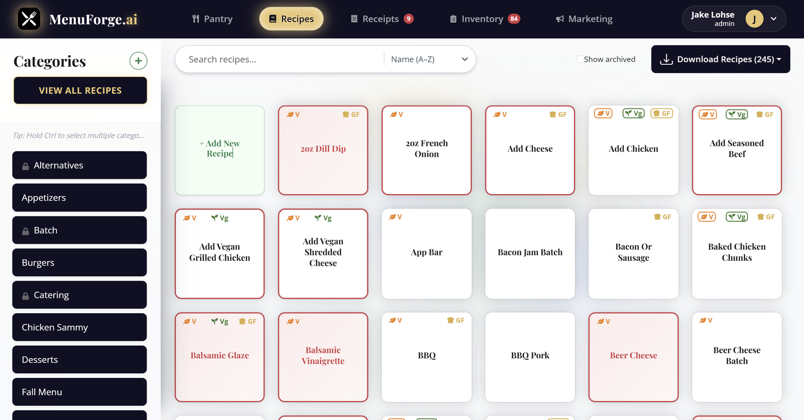
Recipe costing and ingredient tracking for independent restaurants and breweries. Replace your spreadsheet before the next price change makes you underwater.
For independent restaurants and breweries that are done guessing at food cost.
Document every recipe so the next hire can execute without walking them through a binder. When a cook walks, the recipes stay.
Track raw ingredients, pack sizes, vendors, and units. When a case price changes, every recipe that uses it recosts.
Instantly see if a recipe is vegetarian, vegan, or gluten free based on all included ingredients. Substitute flags show when alternatives are available.
See contribution margin while the recipe is still open. Nested batches roll up, so a sauce used in ten dishes still carries the right cost.
Organize recipes by category: Batch, Mains, Sides, and more. Filter and find what you need quickly when the ticket rail is already full.
Multi-user access so AM and PM edit the same truth. Assign roles and keep prep consistent across shifts.
Email or upload invoices. Pack costs update; every recipe recosts. Send your Top 10 spend to the distributor when cases drift. See how Presidential saves $8,800 a year →
AI writes the dish copy from ingredients and sub-recipes, in your brand voice. Send it with photos already in the app.
Describe a dish, tune how it builds, and let AI handle recipes, receipts, marketing, and unit math.
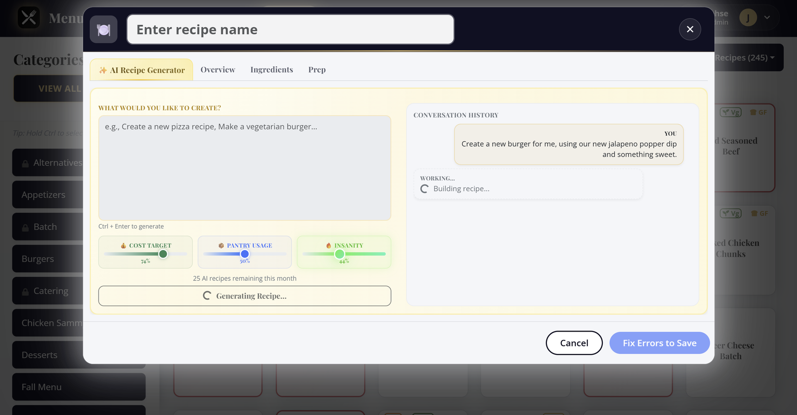
The sliders tell AI how to behave before it writes a line. Drag them and the labels react the same way they do in the app.
Balanced plate cost. Enough room for quality without blowing the budget.
Lean on what you already stock. Fewer special orders, faster prep.
A little spark. Classic bones with one unexpected twist.
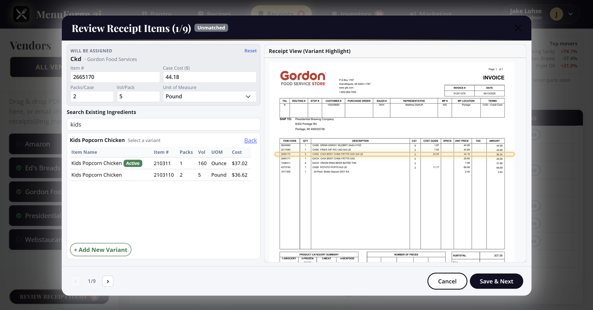
Email in a vendor invoice. AI reads the page, pulls every line item, and matches it to the right pantry ingredient. Confirm anything it could not place, and pack costs update across every recipe that uses them.
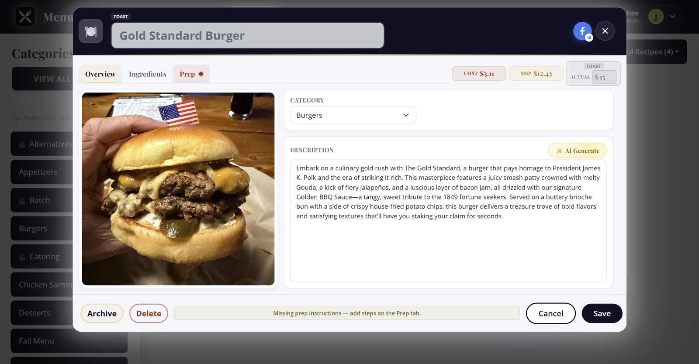
Store pictures of the plate for staff and social. AI reads the recipe and its sub-recipes to write a branded description on the Overview tab — ready for the menu and the post.
Costed against the case price, not a guess.
You buy by weight and cook by volume. Ask AI and it works out the conversion for that ingredient, so a recipe measured in cups still costs against the case price you paid.
MenuForge focuses on recipe costing and ingredient tracking. Toast POS is live. Other POS and accounting tools are on the roadmap.
Sync Toast menus, match items to recipes, and pull sales so you can see what sold against what it costs to make.
No QuickBooks, Restaurant365, or other POS yet. Export recipes and costs to CSV for your accountant. Join the waitlist and name the system you need.
Essentials and AI+ include 300 recipes. Add a pack or go Unlimited if the menu is bigger. Full integrations page
MenuForge is not a home-cook recipe app, and it's not an enterprise inventory suite with a six-month implementation. If you have under 5 recipes or need full POS-based inventory counts, this is not your tool.
Invoice in. Plate cost honest. Next hire can execute.
Pack sizes, vendors, and units for every ingredient. A GFS case and a Sysco bag never fight over which cost is real.
Write the recipe yourself or let AI draft it from a vibe. Cost, minimum sell price, and menu price stay pinned while you work.
Categories, prep steps, and dietary flags live with the recipe. The next hire opens a card instead of a binder.
Real screenshots from the live app. No mockups.
Filter by category, search, and sort, with dietary flags right on the card. The colors do the triage for you: a pink card means the costing is broken, usually a missing price or a unit that will not convert. A red border means the prep instructions are missing, and gold means AI wrote it. You spot every problem without opening a single recipe. Keep the board clean for service, then drill into only the dishes that need a fix. The same grid is where you hand a new cook the full menu without walking them through a binder.
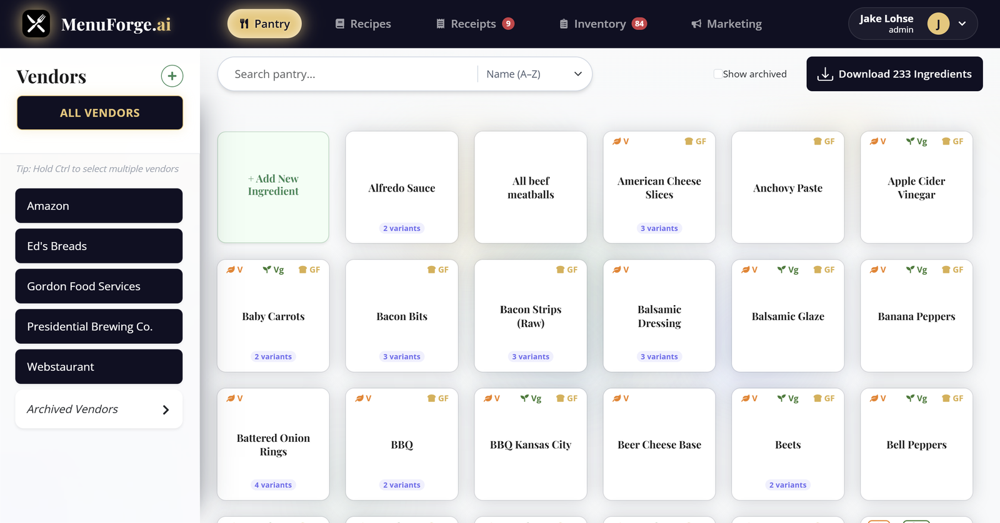
Pack sizes, units, and vendor variants for each ingredient live in one place. Filter by supplier to see exactly what you buy and what it costs, then keep those pack prices flowing into every recipe that uses them. When a vendor swaps a case size, you update it once and the rest of the menu stays honest. Nicknames, item numbers, and alternate packs stay attached to the same ingredient so a GFS case and a Sysco bag never fight over which cost is real. Build recipes from the pantry you already trust, and the plate cost inherits the truth without another spreadsheet pass.
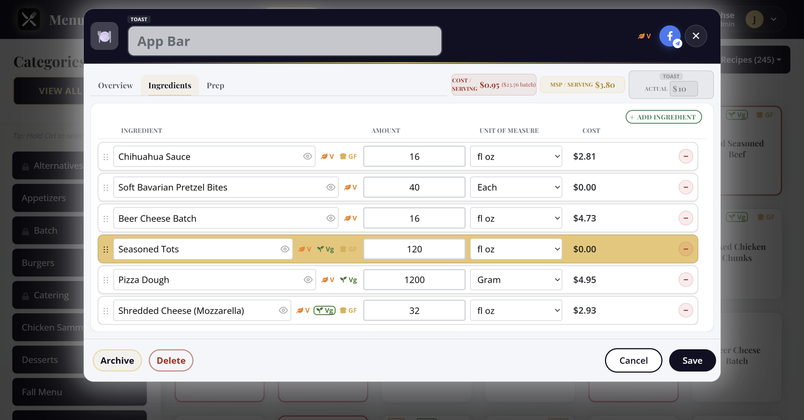
Every ingredient costs itself out as you type. Cost and minimum sell price stay pinned in the header — including cost per serving on a catering bar written for 25 people. Nested batches roll up, so a sauce used in ten dishes still carries the right cost. Change an amount or a unit and the totals move with you. You catch a dish that will not pencil before it ever hits the board.
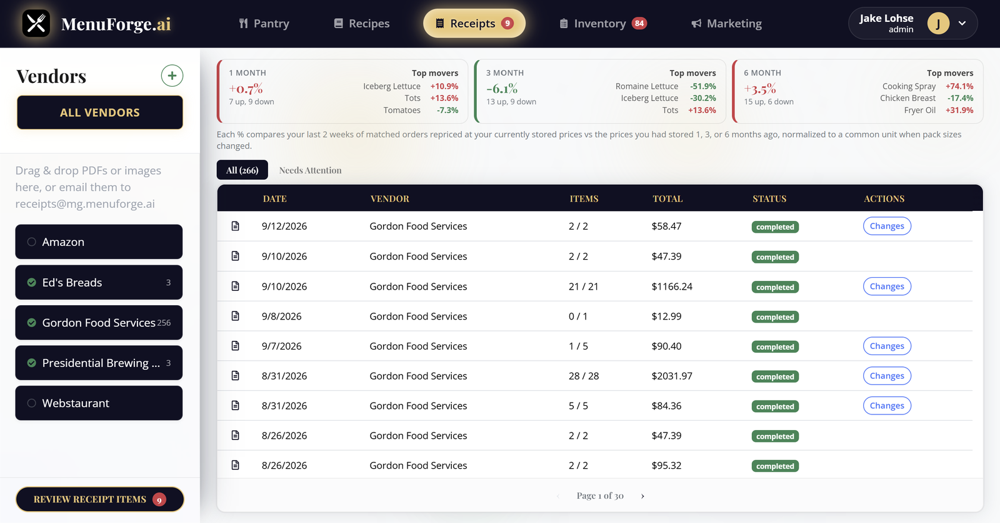
Email or upload a vendor invoice. Confirm the unmatched lines and live pack costs flow straight into your pantry, then every recipe that uses those ingredients recosts itself without a spreadsheet pass. Price-change alerts call out the spikes worth acting on, so you decide whether to raise a menu price, swap a vendor, or leave the build alone before the next order guide goes out.
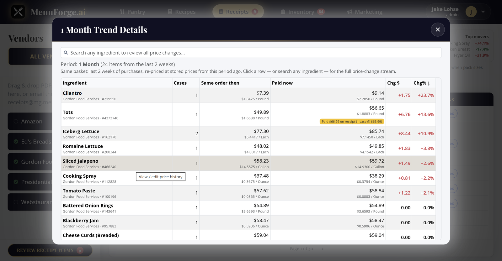
Trends show what is happening to raw goods pricing so you can predict whether COGS are heading up or down before the P&L surprises you. Track pack cost over time per ingredient, with the percent change called out so a quiet creep does not sneak past. Over months of invoices you also see seasonality in produce, oils, and proteins that rise and fall on a calendar, so you can plan specials, lock in a case, or rewrite a build while the window is still open. When a price updates, every recipe using it recosts automatically. Use the history to brief owners, defend a menu change, or catch a vendor that keeps edging the case price without telling you.
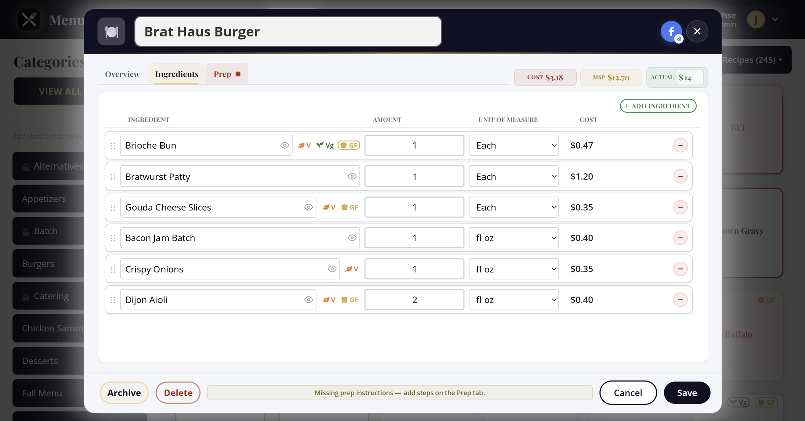
AI writes the caption from the recipe and its sub-recipes in your brand voice. Crop the photo, pick a meal-time slot, and publish without bouncing between tools. Missing prep instructions surface as an alert before you ship the post, so the same card that costs the dish also keeps the cook and the caption honest.
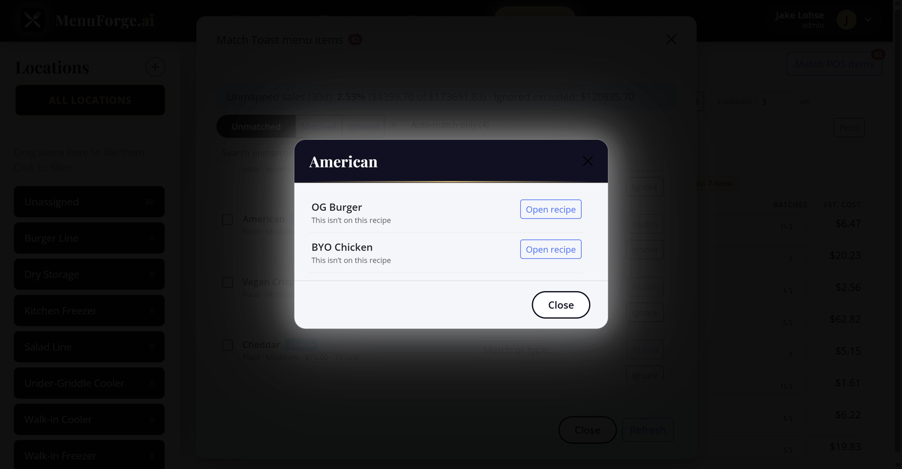
Match Toast menu items and choices to MenuForge recipes, then open the dishes that modifier is tied to. Inventory reduction follows the parent plate, so a Choice like American cheese depletes the right burger — not a guess from the modifier name alone.
Catering recipes write the full bar once, then show cost per serving next to the batch. Fifty Toast sales of a salad bar that serves 25 pull two written recipes — not fifty full bars.
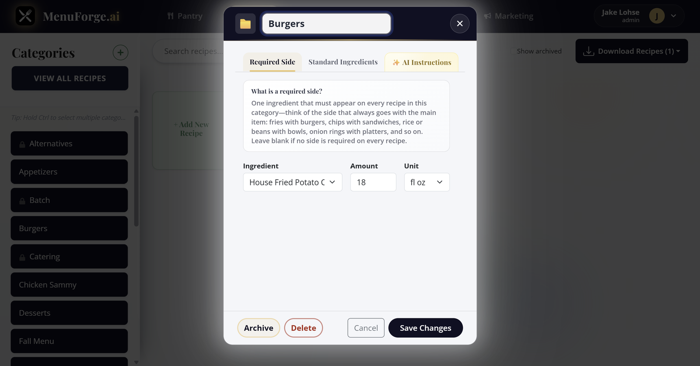
Required sides and standard ingredients live on the category. Every burger picks up the fries (or the bun) so plate cost includes what actually leaves the window.
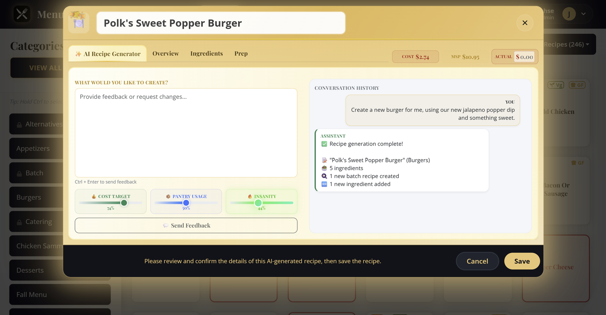
Give it a prompt and the sliders. AI adds new ingredients and nested batch recipes when the pantry does not already have them, then costs the plate against real pack prices.
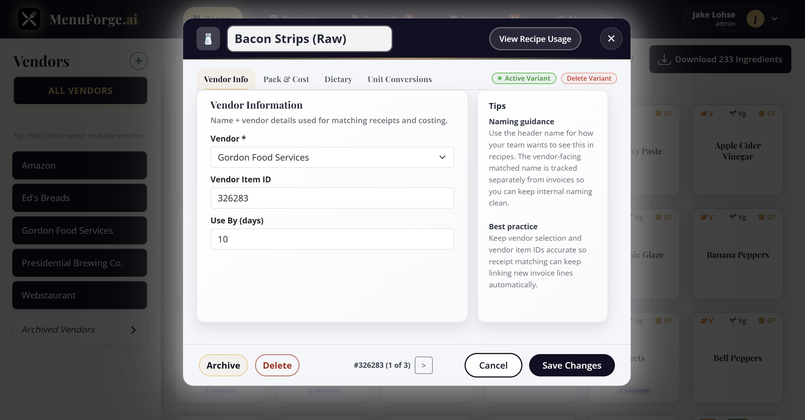
Vendor, item number, and every pack variant sit on the ingredient. Scroll the variants, keep one active, and recipes inherit that pack cost — a GFS case and a Sysco bag never fight over which price is real.
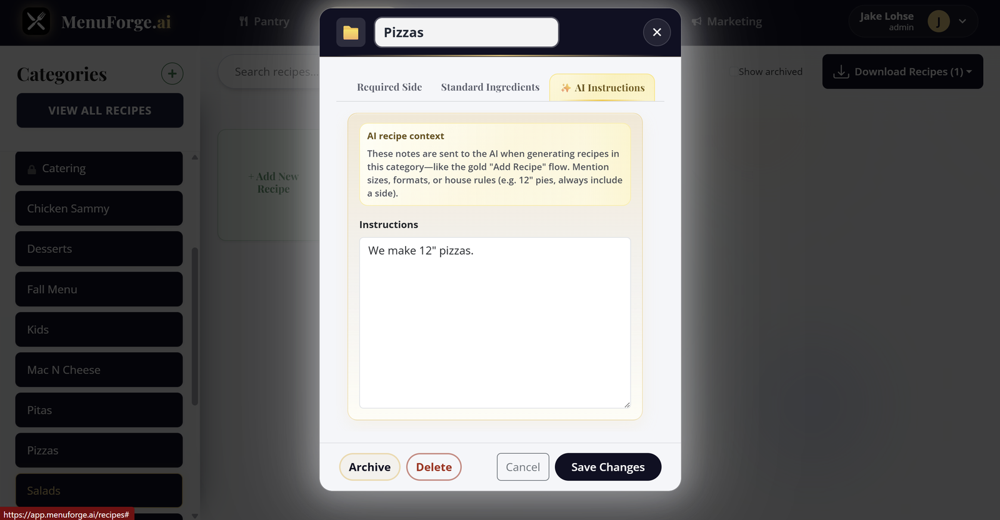
Save category instructions once. The next AI recipe in Burgers or Catering gets that voice, those sides, and those kitchen rules without retyping the brief.
Real operators on costing, prep, and getting the team off spreadsheets
Reviews collected from MenuForge users. Some reviewers requested first-name-only attribution.
Honestly the receipt thing sold me. We used to print invoices, sticky-note the price changes, and hope somebody typed them into the sheet before Friday. Half the time we found out we were underwater on wings after the weekend was already over. Now the invoice comes in, we confirm the matches, and the recipes that use that pack just… update. My closers actually trust the numbers.
From the founder
I used to price all of my recipes in Microsoft Excel. Capturing the costs of all subrecipes accurately was a pain in the neck, and my team was not capable of using the tool for accurate recipe costing. MenuForge has changed everything. Now, even my least tech-savvy team members know exactly what to do. MenuForge is so intuitive that they could pick it up quickly and run with it. Goodbye spreadsheets!
I got tired of guests asking if something was gluten free and three different people giving three different answers. We were basically guessing based on who made the sauce that morning. Having the flags roll up from the ingredients (including the batch stuff) means the ticket and the menu finally say the same thing. Sounds small. It is not small when you are in the weeds.
Our demi and the house vinaigrette were quietly wrecking food cost because nobody wanted to reopen the spreadsheet and redo the parents. I would change a case price and just… leave it. In MenuForge the batch sits inside the dish, so when I fix the sauce once, the steaks and the salads move with it. First time I printed a specials board and believed the MSP without doing math on a deli ticket.
I write like a GM, not a copywriter, and it showed. We were shipping Facebook posts that sounded like a hotel brochure. I hit AI Generate on a few dishes, edited maybe two sentences, and it still sounded like our place. Same afternoon the photo and the caption went out. My marketing person almost cried. In a good way.
Price history showed the oil creep we had been shrugging off. We renegotiated the case before the next quarter.
New hires open a recipe and see prep, cost, and allergens in one place. Training weeks got shorter overnight.
Pastry lives in ounces and bakers cups and whatever the produce guy decided a flat of berries means this week. I used to keep a greasy conversion note taped inside the reach-in. Someone would peel it off. Chaos. Being able to ask for the conversion and still cost against the case we actually bought saved me from another “why is tart food cost 48%” meeting I did not want to have.
I do not love software. I love not getting blindsided. The pink cards on the recipe grid are kind of annoying until you realize they are doing you a favor. Missing price, weird unit, whatever. We fix it before service instead of finding out when the month-end packet shows a surprise. My controller thinks I suddenly got organized. I did not. The grid did.
Multi-user access means the AM and PM teams edit the same truth. No more mystery versions of the chili recipe.
Social posts used to wait on a designer. Now the dish photo and caption leave from the same recipe card.
Vendor variants finally live under one pantry ingredient. GFS and Sysco packs stopped fighting over the real cost.
Minimum sell price in the header keeps us from underpricing a special when food costs jump midweek.
Seasonality in raw goods is obvious once you chart it. We plan produce-heavy specials when the trend dips.
Prep steps live with the recipe, not in a binder nobody updates. Consistency across shifts got boring in the best way.
We generate a draft recipe from a vibe, then tighten costs before it ever hits the menu. Idea to plate got faster.
Alerts when a pack price crosses our threshold. Quiet cost creep does not get to hide for three invoices anymore.
Start free. No credit card. Upgrade when the menu outgrows five recipes.
MenuForge stores your recipes, ingredient costs, and vendor data. We do not sell your data. All data is encrypted in transit and at rest. Payment processing is handled by Stripe. We do not currently hold SOC 2 or GDPR certifications, but we follow industry best practices for data security.